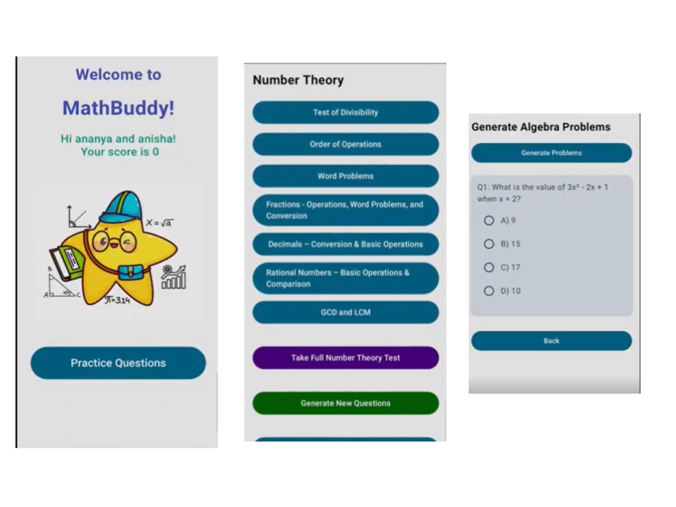
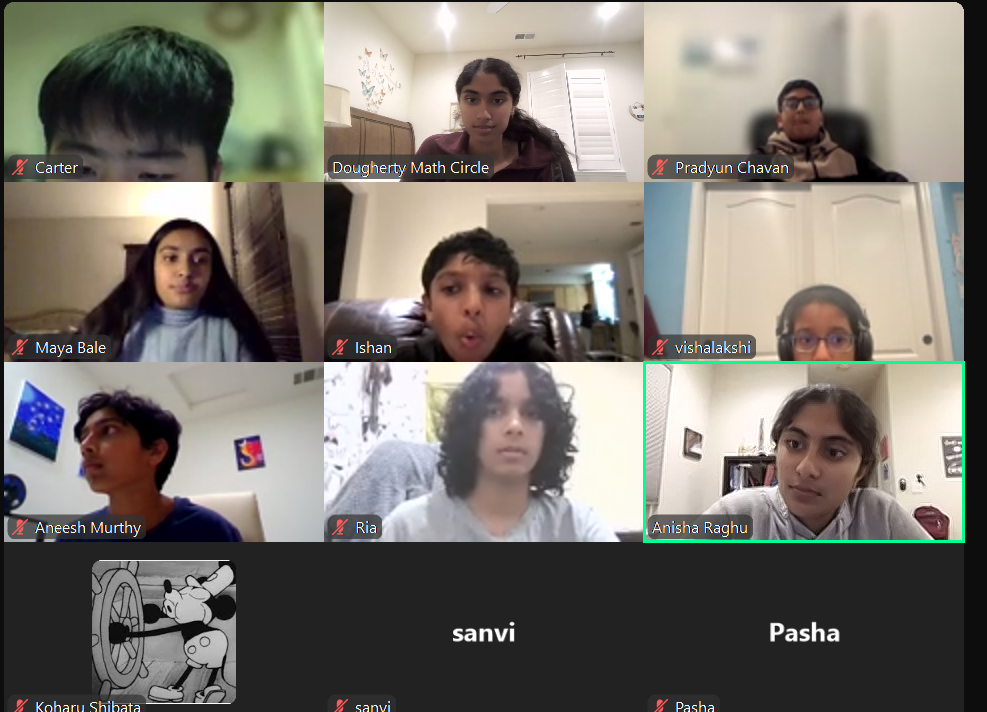
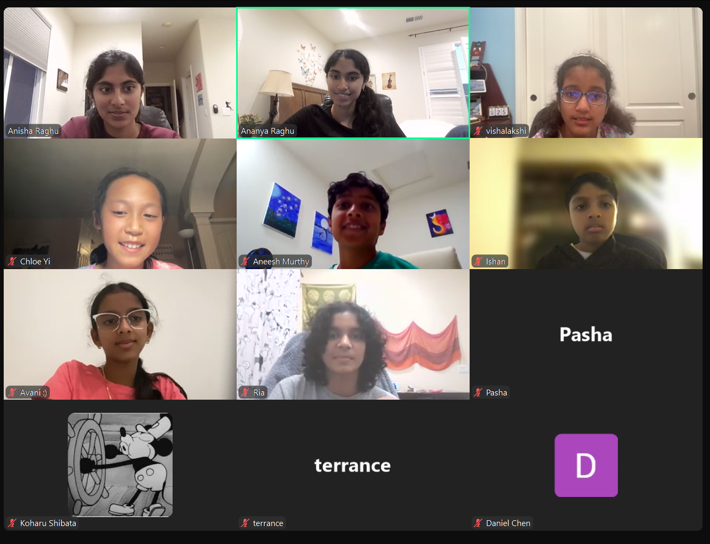
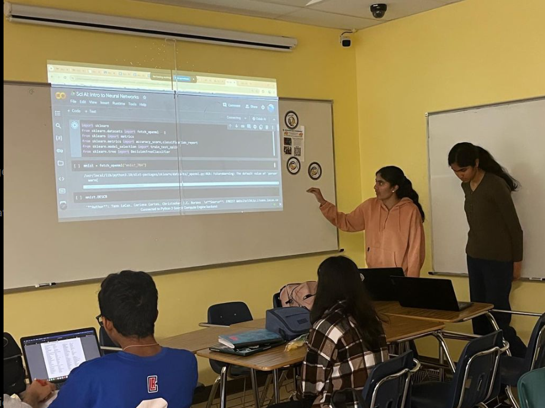
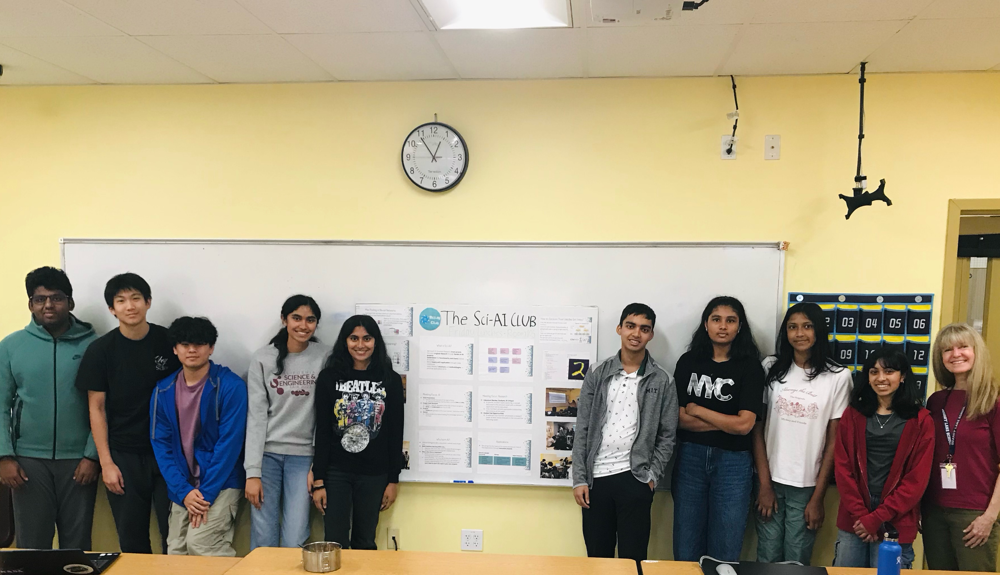
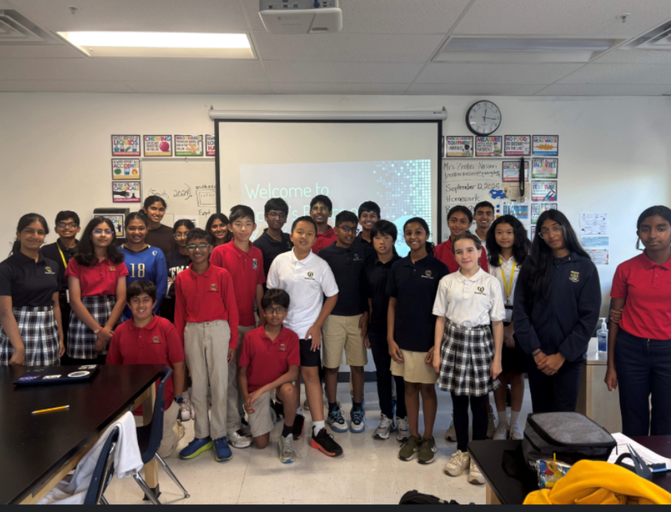
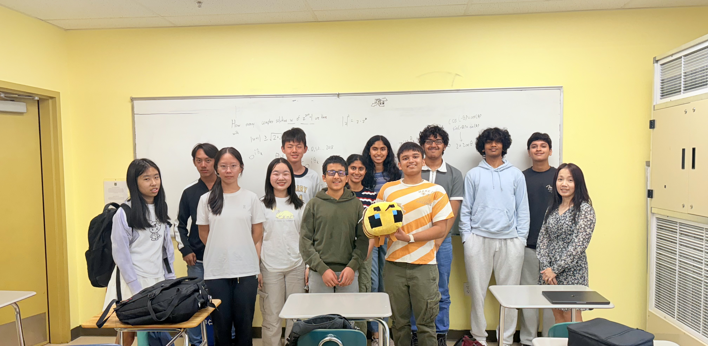
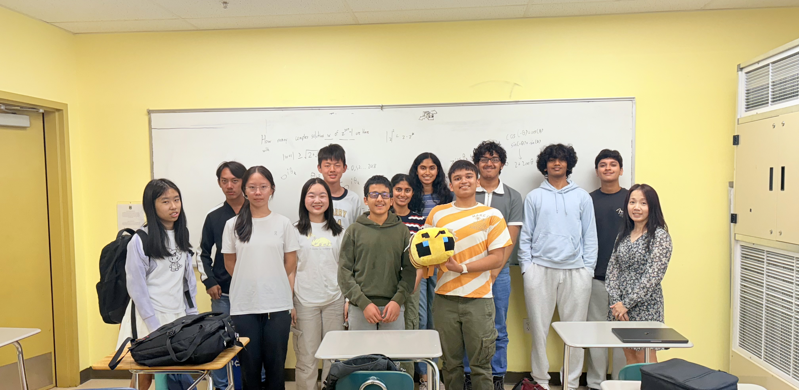

Chudar – Math Instructors and App Developers
- We volunteer at Chudar, an Indian nonprofit providing free quality education to under-resourced students in India through after-school programs. Focuses on improving math skills for K-12 learners in low-income communities.
- We have taught groups of 30+ students weekly through 2 hour classes to prepare for India’s National Means-Cum-Merit Scholarship Exam, which awards financial aid to high-achieving students from low-income families.
- Over 50% of students passed under mentorship.
- We also built MathBuddy, an app for students to learn and practice math individually with access to question banks.

Dougherty Math Circle
- Dougherty Math Circle is a student led nonprofit program that engages students from 10+ elementary and middle schools in advanced math/data science through problem solving sessions, competition prep, and workshops.
- Curriculum developer for 50+ elementary and middle schoolers preparing for math competitions.
- Heads of AI – launched a 6-week AI and math workshop for 30 students.
- Selected as presidents, reaching out to local elementary/middle schools, managing outreach initiatives and curriculum team.


Co-Founders & Co-Presidents of Sci-AI Club
- Passionate about applications of AI in the sciences!
- Sci-AI is a club focused on teaching applications of AI. Taught 30 lectures on ML, created interactive coding notebooks, and developed hands-on projects.
- Led 15+ workshops, pitched to SWE and Robotics clubs, and spoke at assemblies to 100+ students to promote diversity in STEM.
- Expanded to launch “Intro to AI” workshop for middle schoolers to spark early interest in AI. Teaching 25 middle schoolers this fall.



Co-Presidents of Math Club
- Led problem-solving sessions, developed prep material through all 4 years of HS.
- We ran 8-week afterschool Girls in STEM program to inspire elementary schoolers to pursue problem solving at our school and launched a 4-week MOEMS preparation workshop for middle schoolers.
 
